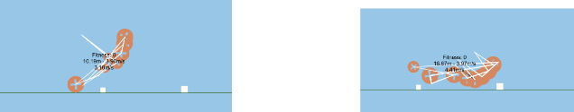

JoaoESmoreira
Rolling in the Hill — Evolutionary Edition
The goal of this project was to design an evolutionary algorithm capable of generating an optimized motorized vehicle that could traverse challenging terrains. Using Unity as a simulation environment, the project explores the performance of different genetic strategies such as mutation, crossover, selection, and elitism.
The full repository and documentation can be found here: FIA-Project Repository.
Technologies Used
The project was entirely implemented in C# and developed using the
Unity game engine.
Unity was used to simulate physical environments and vehicle dynamics,
while C# provided the tools to implement the genetic algorithm logic,
control evolution, and collect performance data across multiple
scenarios.
Cars Preview
Below is a short preview of the project in action:

Repository Structure
- docs/: Contains the final report and presentation materials.
- src/: Source code implementing the genetic algorithm and Unity simulation scripts.
- data/: Stores experimental results and configuration files for different terrains (GapRoad, HillRoad, ObstacleRoad).
- results/: Statistical plots (average fitness, best fitness, standard deviation) and vehicle evolution screenshots.
Objectives
The main objectives of the project were:
- Implement and analyze a Genetic Algorithm for vehicle design.
- Explore various terrains with increasing difficulty.
- Evaluate performance based on vehicle distance, speed, and stability.
- Tune genetic parameters (mutation, crossover, elitism) to achieve optimal convergence.
Genetic Algorithm Design
The evolutionary process is modeled using several genetic operators:
- Recombination: Uniform crossover to generate offspring by mixing parental genes.
- Mutation: Gaussian mutation for introducing diversity in each generation.
- Parent Selection: Roulette wheel selection based on fitness proportion.
- Elitism: Preservation of the best individuals between generations.
- Fitness Function: Evaluates each vehicle according to maximum distance, velocity, and structural characteristics.
- Parameters: Mutation probability, crossover rate, elitism size, and number of generations are configurable.
Footer
Copyright © 2025 Joao ES Moreira
The contents of this website are licensed under the Creative Commons Attribution-NoDerivatives 4.0 International License (CC-BY-ND 4.0).
The source code of this website is licensed under the MIT license, and available in GitHub repositor. User-submitted contributions to the site are welcome, as long as the contributor agrees to license their submission with the CC-BY-ND 4.0 license.